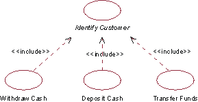
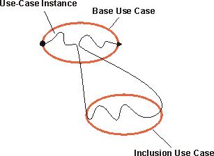
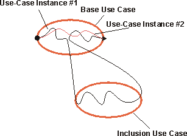
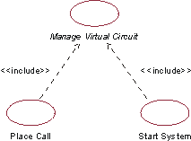

| Рекомендация: Отношение включения |
 |
|
| Связанные элементы |
|---|
ОбъяснениеОтношение включения связывает базовый вариант использования со включаемым вариантом использования. Включаемый вариант использования всегда носит абстрактный характер. Он описывает сегмент поведения, вложенный в экземпляр варианта использования, который выполняется базовым вариантом использования. Базовый вариант использования контролирует отношение включения и может зависеть от результатов выполнения включения. Однако ни базовый, ни включаемый варианты использования не имеют доступа к атрибутам друг друга. В этом смысле включение инкапсулировано и содержит поведение, которое могут применять разные базовые варианты использования. Отношение включения можно применять для следующих целей:
Пример: В банкоматах варианты использования Снять наличные, Внести наличные и Перевести средства должны включать в себя поведение для идентификации клиента. Это поведение можно выделить в новый включаемый вариант использования Идентифицировать клиента, который включают в себя три указанные базовые варианты использования. Эти три базовых варианта использования не зависят от метода идентификации, который поэтому инкапсулирован во включаемом варианте использования. С точки зрения базовых вариантов использования не важно, какой метод применяется для идентификации клиента - считывание банковской карточки или сканирование узора сетчатки глаза. Они зависят только от результата варианта использования Идентифицировать клиента, то есть от того, установлена ли личность клиента. И наоборот, с точки зрения варианта использования Идентифицировать клиента не важно, какие операции базовые варианты использования выполняют с идентификационными данными клиента, или как базовые варианты использования функционируют до выполнения включения - метод идентификации от этого не меняется.  В банкоматах варианты использования Снять наличные, Внести наличные и Перевести средства включают в себя вариант использования Идентифицировать клиента. Базовый вариант использования может иметь несколько включений. Один включаемый вариант использования можно добавить в несколько базовых вариантов использования. Это не влечет возникновение отношений между базовыми вариантами использования. Между одним включаемым вариантом использования и базовым вариантом использования может существовать даже несколько отношений включения при условии, что включение добавлено в разные точки базового варианта использования. Отношение включения определяет эти точки. Включения можно вкладывать друг в друга, то есть включаемый вариант использования может выступать как базовый вариант использования для другого включения. Поскольку включаемый вариант использования носит абстрактный характер, он не требует наличия связанного с ним субъекта. Связь с субъектом необходима только в случае, когда поведение включения предполагает взаимодействие с субъектом. Выполнение включенияПоведение включения добавляется в одну точку базового варианта использования. Когда в процессе выполнения базового варианта использования экземпляр варианта использования достигает точки, в которую добавлено отношение включения, он далее следует описанию включаемого варианта использования. После выполнения включения экземпляр варианта использования возвращается к тому этапу базового варианта использования, на котором он остановился.  Экземпляр варианта использования, следующий описанию базового варианта использования с учетом включения. Отношение включения является безусловным. Это значит, что если экземпляр варианта использования достигает точки в базовом варианте использования, в которой установлено отношение включения, оно выполняется всегда. Если нужно задать условие, его необходимо оформить его как часть базового варианта использования. Если экземпляр варианта использования никогда не достигает точки, в которой установлено отношение включения, оно не выполняется.  Экземпляр варианта использования 1 достигает точки в базовом варианте использования, в которой установлено отношение включения, и включение выполняется. Экземпляр варианта использования 2 не достигает этой точки, и поэтому включение как часть данного экземпляра не выполняется. Включаемый вариант использования - это один целостный сегмент поведения, полностью включенный в одну точку в базовом варианте использования. Если несколько отдельных сегментов поведения нужно добавить в разные точки, необходимо применить отношение расширения (см. раздел Рекомендация по рабочему продукту: Отношение расширения) или обобщение вариантов использования (см. раздел Рекомендация по рабочему продукту: Обобщение вариантов использования). Описание отношения включенияДля добавления отношения включения нужно выбрать точку в последовательности функций базового варианта использования, в которую будет добавлено включение. Эту точку можно задать, создав ссылку на определенный шаг или поток в общем потоке операций базового варианта использования. Пример: В банкоматах вариант использования Снять наличные включает вариант использования Идентифицировать клиента. Отношение включения между этими двумя вариантами использования выглядит следующим образом: Вариант использования Идентифицировать клиента добавлен в поток операций Снять наличные между разделами 1.1 Запустить вариант использования и 1.2 Спросить о сумме. Для полной ясности добавьте запись об этом включении в описание потока операций базового варианта использования. Пример использованияЕсли вариант использования зависит не от процесса выполнения отдельного сегмента поведения, а только от его результатов, можно упростить вариант использования и выделить это поведение во включаемый вариант использования. Включаемый вариант использования можно добавить в несколько базовых вариантов использования. Это позволяет повторно применять одно и то же поведение в разных вариантах использования в рамках модели. Ниже приведено пошаговое описание варианта использования на примере простой телефонной системы: Позвонить
Запустить систему
Содержание текста, выделенного синим цветом, очень похоже. В обоих случаях выполняется один и тот же набор функций, но для разных целей. Это сходство можно использовать и выделить общее поведение в новый вариант использования Управлять виртуальными цепями. После выделения общего поведения варианты использования приобретают следующий вид: Позвонить
Запустить систему
В диаграмме вариантов использования созданное отношение включения будет выглядеть следующим образом:  Оба варианта использования (Позвонить и Запустить систему) включают в себя поведение абстрактного варианта использования Управлять виртуальной цепью. |
© Copyright IBM Corp. 1987, 2006. Все права защищены.. |